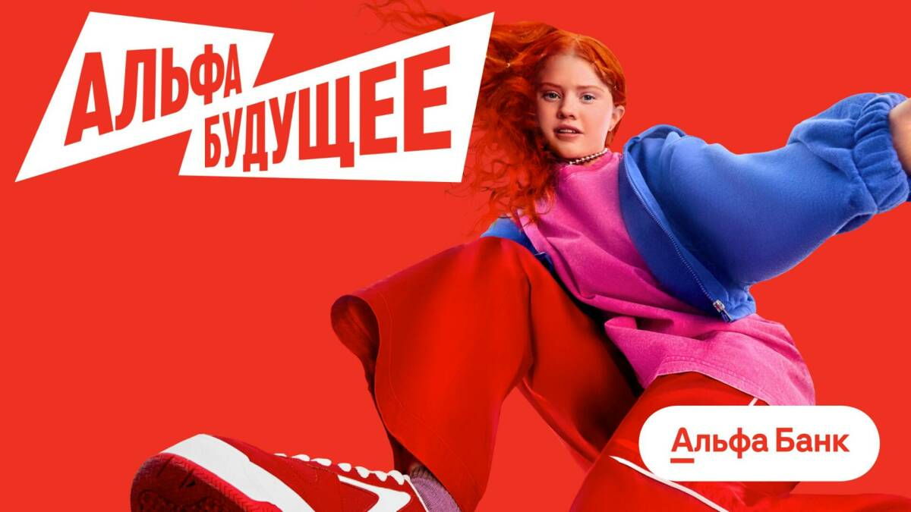
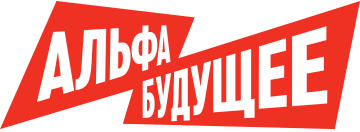
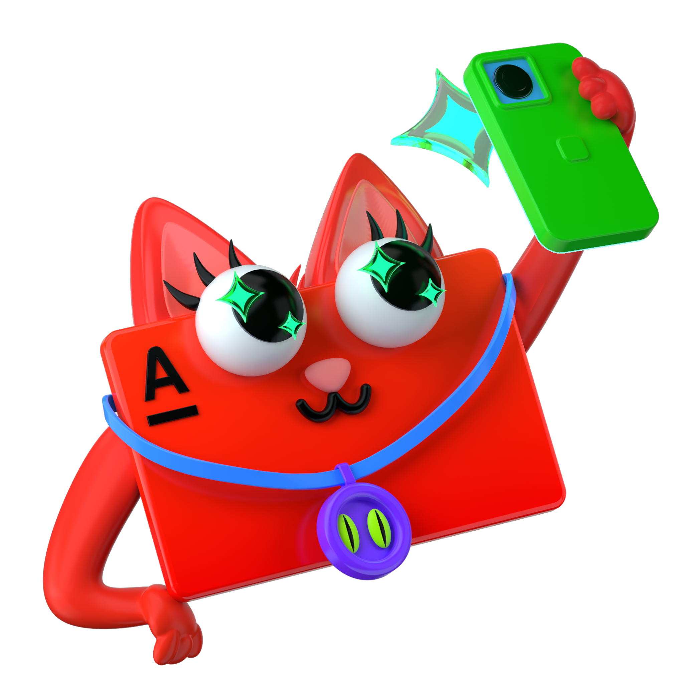

Группа 1

Начни свою
карьеру
Определи свои сильные стороны и достижения, а потом расскажи команде, чем ты будешь полезен в проекте.
Твой первый
шаг в карьере
начинается здесь
шаг в карьере
начинается здесь

Введи код сессии
Для ведущего
Выбор команды
Раздел для
школьников
Команда «Семейный банк» ищет готовую команду, которая спроектирует и разработает раздел приложения для школьников.

Ситуация
Школьникам нужен свой раздел в приложении банка — понятный и безопасный для повседневных дел. В нём можно будет пополнить баланс и оплатить обед в столовой, отложить карманные деньги на цель, получить перевод от родителей и задонатить в Roblox. За полезные финансовые привычки раздел может предлагать игровые задания, прогресс и небольшие награды. Команда должна выяснить, что действительно нужно школьникам, спроектировать раздел и разработать его первую рабочую версию — продумать путь по экранам, основные функции и защиту денег и личных данных.
7человек в команде
30 секна рассказ о себе
3 командызаказчики выберут одну
Правила игры
- За 30 секунд расскажи своими словами, чем можешь быть полезен этому проекту. Не зачитывай карточку: вспомни, что ты делал, что у тебя получилось и как это может помочь команде.
- Каждая команда выбирает 7 участников из 12 и собирает готовый состав для проекта. Руководители команды «Семейный банк» сравнят три команды и выберут одну.
- Не показывай карточку другим участникам и не зачитывай текст.
Кто работает над проектом
Готово!
Ты уже
в команде
Теперь найди ребят из своей команды. Расскажи о себе и о том, чем можешь помочь.
Сильный ответ
начинается
с примера
начинается
с примера
Если участников меньше, оставшиеся карточки просто не понадобятся.